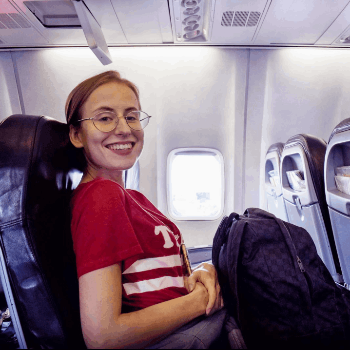
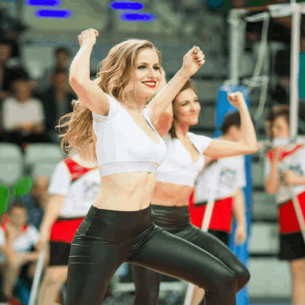

My goal is to create accessible, useful and beautiful web solutions. Appreciating PEOPLE-centered design (UCD).
I am a holistic designer, who connects users with developers and business. I like to keep an eye on the whole project, from first meeting to go-live presentation. Delivering designs from research, through information architecture, interactions, lo-fi wireframes to detailed high-fidelity visual designs. I conduct the Heuristic evaluation to find usability problems, even at the mockups stage.
Always keeping in mind, that ones the product is released it needs to be evaluated over time, because of its users, technology and environment.
Hard-working with a deep passion for UX/UI design, problem-solving, and innovation. Over three years of UI/UX designer experience and around three years of the marketing experience. Delivering creative and innovating solutions. Working successfully both in groups and alone.
Always finding time to learn, develop and create something extraordinary. Recent master’s degree graduate in Business Informatics, where I investigated a problem of accessibility in the modern UI design. Currently in the process of Trusted Tester certification (WCAG 2.1).
Visual design
I design from scratch. Starting from pen and paper (or iPad) sketches, through wireframes, low-fidelity prototypes, to high-quality designs. My goal is always to design websites and systems that will suit user needs. I like to spend time on good IA and IxD as a basis of well-designed UI. What is more, I always try to add ‘me’ to the design. That is why, every icon, graphic or prototype is unique and do my best. In the past, I did work for in a marketing team, where I had a chance to design posters, business cards, mugs and rollups.
Accessibility
I am a big fan of accessible design. That is why I always try to add accessibility laws into visual designs. I attend workshops, read books and publications on these topics. I am currently in the process of Trusted Tester certification. What is more, for my master thesis, I researched the topic of accessibility in modern UI design and proposed the new layout solution for the evolved website. For me, it would be a big advantage to work with people who take care of accessibility issues!
As I want to spread the awareness of accessibility and user experience importance, I decided that the best way to get to a wide range of people is to create an Instagram account - @izabellacreates. I upload there posts about user experience and accessibility. I also add there my own designs.
Next interesting thing that I am working on is a #designerthouthts project, where I share designers' thoughts - you can check this at @uxmornings.
I believe that as a product designer we can decrease the barriers about more than 70% (only using good design and clear code approach).
Working remotely
I like the fact that I can create a work environment that is conducive to putting out my best work. I like the challenge of remote cooperation and the fact that I can have friends from different places. For me, diversity is beautiful and we should learn from it.
I am crazy about travelling. Warsaw and Poznań are one of my favourite cities. I would be happy to visit you in the office.